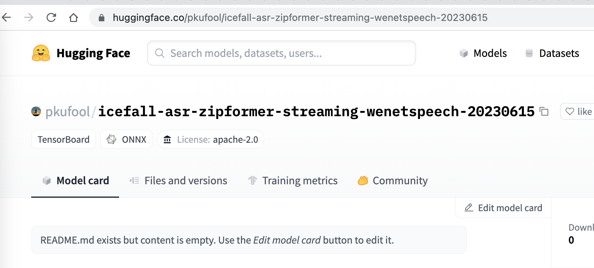

Pre-trained models
Pre-trained models for different projects
Project |
Pretrained models |
How to download
We are hosting our pre-trained models on Huggingface as git repositories managed by Git LFS.
There are at least two methods for downloading:
Using
git lfsUsing
wget
In the following, we use the pre-trained model pkufool/icefall-asr-zipformer-streaming-wenetspeech-20230615 (Chinese) as an example.
Using git lfs
Please first install git-lfs by following https://git-lfs.com/.
# apt/deb
sudo apt-get install git-lfs
# yum/rpm
sudo yum install git-lfs
Please see https://github.com/git-lfs/git-lfs/blob/main/INSTALLING.md for details.
brew install git-lfs
Please visit https://gitforwindows.org/
to download and install git-lfs.
Then use the following commands to download pre-trained models:
GIT_LFS_SKIP_SMUDGE=1 git clone https://huggingface.co/pkufool/icefall-asr-zipformer-streaming-wenetspeech-20230615
cd icefall-asr-zipformer-streaming-wenetspeech-20230615
git lfs pull --include "exp/*chunk-16-left-128.*onnx"
$env:GIT_LFS_SKIP_SMUDGE="1"
git clone https://huggingface.co/pkufool/icefall-asr-zipformer-streaming-wenetspeech-20230615
cd icefall-asr-zipformer-streaming-wenetspeech-20230615
git lfs pull --include "exp/*chunk-16-left-128.*onnx"
set GIT_LFS_SKIP_SMUDGE="1"
git clone https://huggingface.co/pkufool/icefall-asr-zipformer-streaming-wenetspeech-20230615
cd icefall-asr-zipformer-streaming-wenetspeech-20230615
git lfs pull --include "exp/*chunk-16-left-128.*onnx"
Note
It is very important to set the environment variable GIT_LFS_SKIP_SMUDGE to 1.
We don’t recommend using git lfs install as it will download many large files that
we don’t need.
Using wget
First, let us visit the huggingface git repository of the pre-trained model:
{kind=link}
Click Files and versions and navigate to the directory containing files
for downloading:
{kind=link}
Right click the arrow that indicates downloading and copy the link address.
After that, you can use, for instance, wget to download the file with the following
command:
wget https://huggingface.co/pkufool/icefall-asr-zipformer-streaming-wenetspeech-20230615/resolve/main/exp/decoder-epoch-12-avg-4-chunk-16-left-128.int8.onnx
Repeat the process until you have downloaded all the required files.